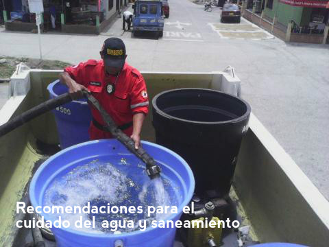

Cuida y protege las fuentes de agua.
Cuida y protege las fuentes de agua.|  |
Recomendaciones para el cuidado del agua y saneamiento
Cuida y protege las fuentes de agua.
Realiza un uso racional del agua para consumo humano y para actividades productivas (agrícolas, pecuarias, agroindustriales).
Para obtener agua segura puedes utilizar las siguientes técnicas: a) filtrar el agua b) dejar que se asiente por al menos 24 horas, c) hervir el agua por al menos 10 minutos; y, d) clorar el agua: en 1 litro de agua colocar 1 gota de cloro comercial de concentración al 5%.
Incentiva a tus vecinos a mantener limpios los cauces de quebradas y ríos.
Limpia las alcantarillas y cunetas para facilitar la circulación del agua de lluvia.